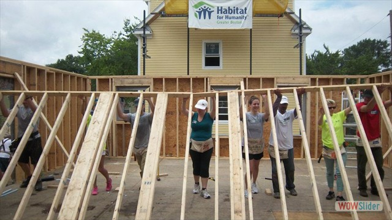

Our Mission
Habitat for Humanity believes that every man, woman, and child should have a decnet, safe, and affordable place to live. We build houses all over the world using volunteer labor and donations. Our partner families purchase these houses through non-profit, no-interest mortgage loans or innovative financing methods.
